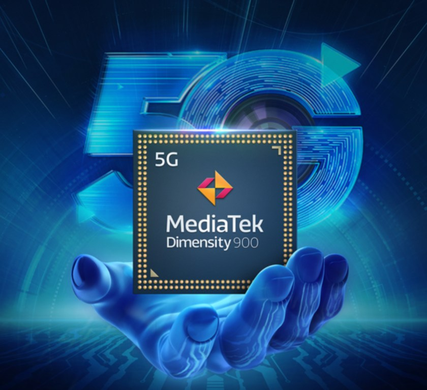

Hoy MediaTek ha anunciado un nuevo procesador para su familia Dimensity 5G. Hablamos del nuevo Dimensity 900 5G, mismo que está construido en un proceso de 6nm, permitiéndole varias ventajas como veremos a continuación.
Primeramente, veremos una diferencia con su admisión de redes WiFi 6, pantallas ultrarrápidas Full HD+ y cámaras principales de hasta 108MP.
«Dimensity 900 ofrece un conjunto de mejoras visuales de conectividad, pantalla y 4K HDR a los teléfonos inteligentes 5G de gama alta y brinda a las marcas una gran flexibilidad de diseño para su portafolio 5G. «El soporte de 5G y Wi-Fi 6 en el chipset, garantiza que los usuarios aprovechen al máximo sus dispositivos con una conectividad súper rápida y confiable» Hugo Simg, Director de Desarrollo de Negocio para América Latina en MediaTek
Además, está integrado a un módem 5G New Radio sub-6GHz con agregación de portadora CA y soporte de ancho de banda de hasta 120MHz. Cuenta con una unidad central de procesamiento de >ocho núcleos, agrupando dos procesadores ArmCortex-A78 de hasta 2.4GHz y otros seis núcleos Arm Cortex-A55 con 2GHz.
El Dimensity 900 será compatibles con memorias RAM LPDDR5 y almacenamientos físicos tipo UFS 3.1. Logrará adaptarse a frecuencias de actualización de pantalla con hasta 120Hz. Como era de esperarse, incorpora una unidad de procesamiento de gráficos Arm Malo-G68 MC4, además de una unidad de procesamiento de inteligencia artificial independiente para ofrecer una eficiencia energética óptima.
Entre varias tecnologías de vanguardia, este procesador incluye las siguientes:

En caso de que no fuese suficiente, el procesador Dimensity 900 también admite juegos y llamadas de doble SIM al mismo tiempo, así como los modos de juego súper hotspot.
Podríamos concluir que esta serie ofrece conexiones, multimedia, imágenes con IA y más que anteriormente solamente habíamos visto en los procesadores para smartphones premium como los Dimensity 1000, 1100 y 1200.
De acuerdo con la compañía, el recién presentado MediaTek Dimensity 900 llegará a varios smartphones que se presentarían en los mercados globales para el segundo trimestre del 2021, es decir, este mes y hasta finales de junio en adelante.
¿Qué smartphone te gustaría ver en Dimensity 900